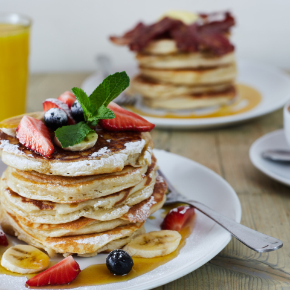

French Toast
Ingredients
- 2 medium free range eggs
- 40ml full fat milk
- 2 slices of slightly stale sour dough
- 1 knob of butter
- sprinkling of brown sugar
Method
- Crack the eggs into a bowl and whisk in the milk.
- Gently heat the knob of butter in the frying pan.
- Soak the slices of bread in the egg/ milk mixture, absorbing as much as possible.
- Place the soaked bread into the pan and lightly fry on each side until the outside is browned and the bread is softer.
- Finally sprinkle the brown sugar over the french toast, allowing it to sligthly caramalise before tucking in.

Pancakes
Ingredients
- 100g plain flour
- 300ml milk
- 2 large free range eggs
- small dash of oil
- chopped berries
- maple syrup (optional)
Method
- Place eggs, flour and milk into a bowl and whisk into a smooth batter.
- Heat the pan, gently wiping it with oiled cloth.
- When hot, cook your pancakes for 1 min on each side until golden, keeping them warm in a low oven as you go.
- Garnish with berries and Maple Syrup as desired.
